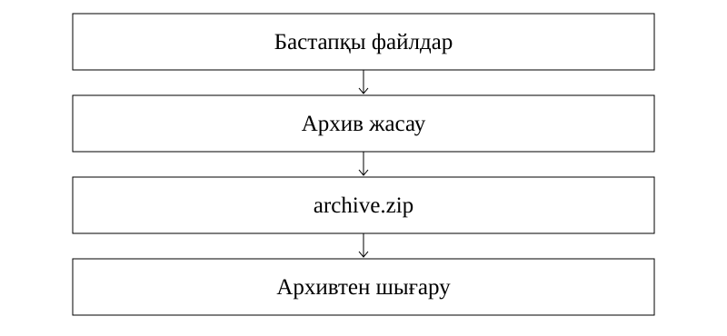

Файлдарды архивтеу және архивтен шығару
1. Оқу мақсаттары
Архивтеу мен сығуды ажырату
Архивті жасау және қалпына келтіру ретін түсіндіру
Көлемнің азаю пайызын есептеу
2. Алдын ала білу қажет
Файл форматтары
Байт және еселіктері
Пайыз
3. Негізгі теория
Архив және сығу
Архив бір немесе бірнеше файл мен буманы бір құрылымға біріктіреді. Сығу деректерді ықшам көрсету арқылы көлемді азайтуға тырысады. Архив сығусыз да жасалуы мүмкін. Сығылған файл әрқашан қатты кішіреймейді: алдын ала сығылған деректе үнем аз болуы немесе қызметтік дерек есебінен көлем өсуі мүмкін.
Дереккөз: S1:19-20; S2:32
Қалпына келтіру
Шығынсыз сығуда архивтен шығару бастапқы байттарды дәл қалпына келтіреді. Архивті ашып мазмұнын көру мен оны бөлек бумаға шығару бір әрекет емес. Түпнұсқаны өшірмей тұрып, архивтің ашылатынын және керекті файлдардың шығарылатынын тексеріңіз.
Дереккөз: S1:20-22; S3:35,39
Үнем және қатынас
V₀ бастапқы көлем, V₁ архив көлемі болсын. Үнемделген орын ΔV = V₀ − V₁. Азайған пайыз p = (V₀ − V₁) ÷ V₀ × 100%. Қалған пайыз r = V₁ ÷ V₀ × 100%. p + r = 100%. «Екі есе кішірейді» дегеніміз V₁ = V₀ ÷ 2, яғни 50% азайды.
Дереккөз: S3:34-35; авторлық есептеу
Практикалық жұмыс реті
Алдымен файлдарды таңдап, архив жасау командасын қолданыңыз. Формат пен сақтау орнын белгілеңіз. Жасалған архивті ашып тексеріңіз. Архивтен шығару командасында бөлек мақсатты буманы көрсетіңіз. Көптомды архив бөліктерге бөлінеді, толық қалпына келтіру үшін қажетті томдардың бәрі болуы керек.
Дереккөз: S1:20-22; S2:33-35
4. Терминдер
Архивтен шығару не істейді?
Файлдарды мақсатты бумаға қалпына келтіреді.
Үнем пайызының бөлімі?
Бастапқы көлем V₀.
20%-ға азайса қанша қалады?
80%.
Көптомды архивке не керек?
Қажетті томдардың толық жиыны.
5. Сызба

Сызба файлдарды архивке жинау мен кейін шығару ретін көрсетеді. ZIP ішіндегі деректер шығару кезінде бөлек мақсатты бумаға жазылады.
Осы сабаққа жаңадан жасалған сызба.6. Қадамдық мысалдар
80 Мбайттан 50 Мбайт архив алынды. Үнем қанша?
- ΔV = 80 − 50 = 30 Мбайт.
- p = 30 ÷ 80 × 100% = 37,5%.
- Қалған үлес 62,5%. Екеуін шатастырмаңыз.
120 Мбайт дерек 25%-ға азайды. Архив көлемі?
- Қалған үлес 100% − 25% = 75%.
- V₁ = 120 × 0,75 = 90 Мбайт.
- Тексеру: (120 − 90) ÷ 120 = 0,25.
Оқу моделі: AAAAAABB. Қатар ұзындығын белгімен бірге жазу.
- Алты A және екі B бар.
- 6A2B деп ықшам көрсетуге болады.
- Бұл нақты ZIP алгоритмі емес. Сан мен белгінің кодталуы алдын ала келісілген қарапайым модель.
Жазылым үлгісі
p = (V0 − V1) / V0 × 100%
r = V1 / V0 × 100%7. Салыстыру кестесі
| Әрекет | Нәтиже |
|---|---|
| Архив жасау | Файлдарды архив құрылымына жинау |
| Сығу | Көлемді азайтуға әрекет |
| Мазмұнын көру | Архивтегі файл тізімін қарау |
| Архивтен шығару | Файлдарды мақсатты бумаға қалпына келтіру |
| Көптомға бөлу | Архивті бірнеше бөлікке бөлу |
8. Жиі кездесетін қателер
30%-ға азайды дегенді бастапқы көлемнің 30%-ы қалды деп түсіну.
Архивтеуді шифрлау немесе резерв көшірменің толық баламасы деп ойлау.
Алдын ала сығылған сурет пен дыбыстың кез келген архивте міндетті түрде екі есе кішіреюін күту.
9. A, B, C деңгейіндегі тапсырмалар
A деңгейі
60 Мбайттан 45 Мбайт қалды. Үнемделген орын қандай?
Шешімін тексеру
60 − 45 = 15 Мбайт.
B деңгейі
60 Мбайттан 45 Мбайт қалды. Қанша пайызға азайды?
Шешімін тексеру
15 ÷ 60 × 100% = 25%.
C деңгейі
Архив 72 Мбайт, бұл бастапқы көлемнің 60%-ы. Бастапқы көлем қанша?
Шешімін тексеру
72 ÷ 0,6 = 120 Мбайт.
10. Өзін-өзі тексеру
Бұл 15 сұрақ бір дұрыс жауапты авторлық жаттығулар. Әр сұрақта бес нұсқа бар. A/B/C бойынша 5/5/5 үлесі оқу үшін таңдалды. Ресми ҰБТ нұсқасының толық көшірмесі емес: 2026 спецификациясында 25 жеке бір жауапты, контекстегі 5 бір жауапты, 5 бір немесе бірнеше жауапты және 5 сәйкестендіру тапсырмасы бар. Ресми күрделілік үлесі 50/30/20, бұл жинақта 5/5/5.
Алғашқы жауап есепке алынады. Барлық нұсқаның түсіндірмесі тексергеннен кейін ашылады.
11. Жауаптарды талдау
Әр тест жауабынан кейін дұрыс жауаптың шешімі көрсетіледі. «Барлық нұсқаның түсіндірмесі» арқылы төрт қате нұсқаның себебін қараңыз. Толық жауап кілті баспа оқулықта да бар.
12–15: аралас тапсырмаларға өтіңіз. 8–11: қате тақырыптарды қайталаңыз. 0–7: теория мен мысалдарға оралыңыз. Бұл оқу бағдары, ресми баға емес.
12. Қысқаша қорытынды
Архивтеу файлдарды біріктіреді, сығу көлемді азайтуға тырысады.
Азайған пайыз бастапқы көлемге қатысты есептеледі.
Архивті тексеру мен файлдарды шығару ретін сақтаңыз.
13. Қайталау карточкалары
Архивтен шығару не істейді?
Файлдарды мақсатты бумаға қалпына келтіреді.
Үнем пайызының бөлімі?
Бастапқы көлем V₀.
20%-ға азайса қанша қалады?
80%.
Көптомды архивке не керек?
Қажетті томдардың толық жиыны.
14. Дереккөздер
S1. Р.А. Қадырқұлов, Ә.Д. Рысқұлбекова, Г.К. Нұрмұханбетова. Алматыкітап, 2023. 1.pdf, беттер: 19, 20, 21, 22.
S2. С.Т. Мұхамбетжанова, А.С. Тен, Л.Г. Дедмедова. Атамұра, 2021. 2.pdf, беттер: 32, 33, 34, 35.
S3. Г.И. Салғарева, А.С. Маханова, Л.А. Расина. Арман-ПВ, 2021. 3.pdf, беттер: 34, 35, 39.
NIST: Binary prefixes: Екілік және ондық еселіктерді ажырату
Unicode FAQ: UTF-8, UTF-16, UTF-32: Бір таңба әрдайым бір байт емес
ҰТО: 2026 информатика спецификациясы: Ресми тапсырма түрлері мен күрделілік үлесі
Түсіндірмелер, тапсырмалар және сызба жаңадан жасалды. Оқулық суреттері көшірілген жоқ. Толық шығу тегі: sources.json.